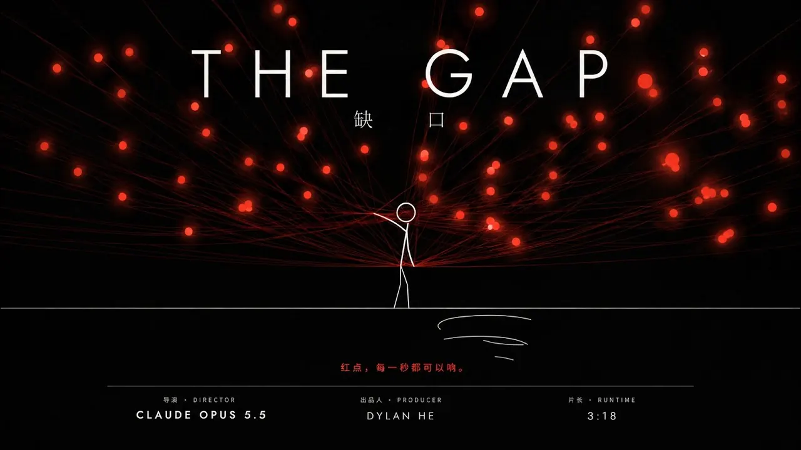

A FILM BY DYLAN HE
The Gap

ABOUT THE FILM
From the sun to clocks, from notifications to AI: a reflection on time and attention.
NEXT FILMSee You Tomorrow

From the sun to clocks, from notifications to AI: a reflection on time and attention.